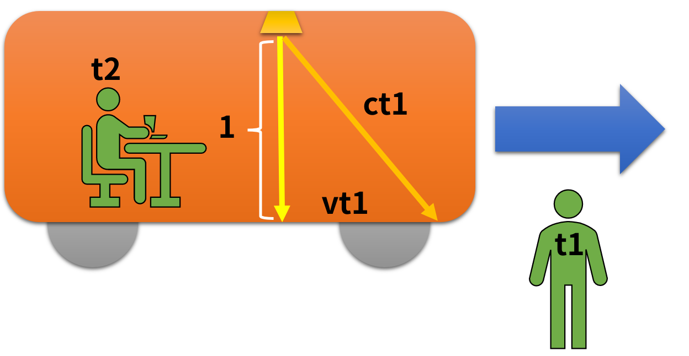
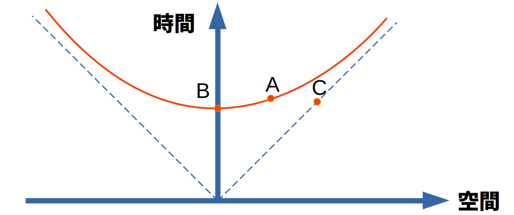
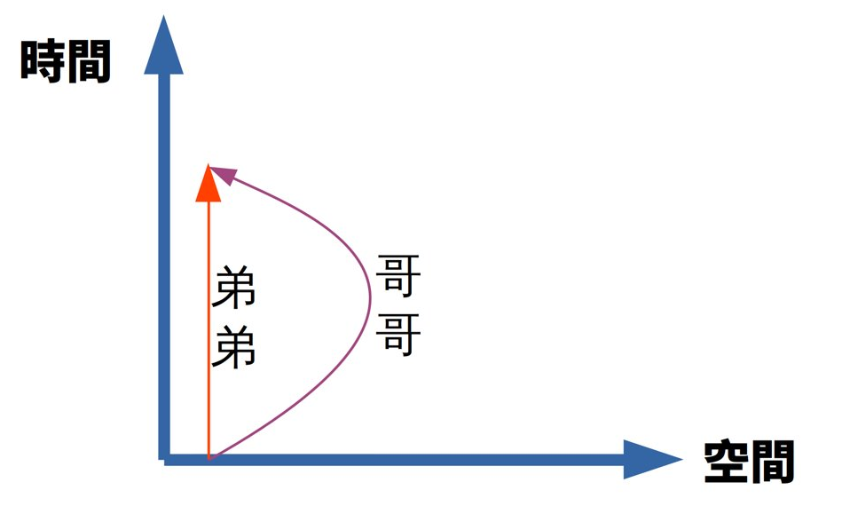

本次分享主題：狹義相對論
 |
- 愛因斯坦(1879-1955)
- 1905年，發表狹義相對論：慣性系下的時空理論
- 1915年，發表廣義相對論：加速系(重力場)的時空理論
|
要描述空間，需要一個座標系

|
亞里斯多德認為，地球就是座標系的原點，所有星體都是固定在透明球面上繞著地球轉。
|
但天動說無法解釋行星逆行現象

|
Planet在希臘文的原意是漫游者，表示會在天空不規律的運動。
|
西元150年，托勒密提出新版的天動說
 |
行星會固定在某個圓盤上，然後圓盤固定在透明球面上，以地球為中心旋轉。
|
西元1536年，哥白尼創立了「日心說」

|
太陽是宇宙的中心，地球和其他行星都繞太陽運行。
因此太陽才是座標系的原點。
|
伽利略：絕對運動不存在

|
在飛機上看著地面飛快後退，到底是飛機在動還是地面在動?
在飛機上作所有的物理實驗，都無法證明我們是否在運動中。
因此「絕對運動」變成一個多餘的概念。
|
Occam's Razor
 |
當兩個理論解釋能力相同時，應該選擇假設較少的那一個。
無論以飛機或地面為空間原點，都不影響實驗結果，所以絕對座標的概念是多餘的。
結論：空間是相對的。
|
電生磁
1821年，奧斯特發現電流通過線圈，會產生磁場
磁生電
1831年，法拉第發現電磁感應現象，將磁鐵穿過線圈，磁場的變化會產生電流。
場(Field)
 |
法拉第為了描述電磁感應，所以想像磁鐵的週圍會產生磁場。
磁場由無限多條磁力線組成，磁力線沒有起終點，而是環狀或延伸到無限遠。
|
電磁場

|
1861年，馬克士威整理過去電磁學的研究，整理為20條微分方程，並且引入電磁場的概念。
經過一段時間研究，馬克士威提出了電磁波方程式。
|
分子渦流模型

|
每根磁力線想像成水管，中間有某種流體繞著軸心旋轉。
為了避免流體之間互相摩擦，水管中間有微小圓珠，以垂直方向旋轉。
如果圓珠移動的方向和水管相同，就形成電流。
|
位移電流

|
馬克士威為了使方程式在數學上沒有矛盾，所以加入「位移電流」。
加入位移電流後，可以將馬克士威方程式，以波動方程式表達。
電場和磁場互相垂直，而電場、磁場也垂直於前進的方向。
|
光是一種電磁波
馬克士威發現電磁場傳播的速度，等於電場和磁場的強度比，計算結果是每秒299792458公尺，很接近法國科學家發現的光速。
公式中沒有任何地方提到波源或接收裝置的速度。
於是他大膽假設，光是一種電磁波，而光速則是光在「乙太」傳播的速度。
乙太

|
因為光是一種波，當時物理學家認為必然存在某種物質作為傳播的介質：「乙太」。
按照當時的猜想，乙太無所不在，沒有質量，絕對靜止。乙太充滿整個宇宙，電磁波可在其中傳播。
|
光速實驗

|

|
當時的科學家相信，如果以太存在，有時候地球是順行、有時候是逆行，所以光速應該會隨時間改變。
但邁克生和莫立用精確測量，發現全年任何時間、任何方向，光的速度都不變。
所以「乙太」的概念是多餘的，應該被 Occam’s Razor 切掉。
|
狹義相對論有兩條公理
- 第一條：馬克士威方程式是對的
- 光速在真空中永遠不變 → 光速不變性
- 第二條：遵循伽利略的觀點
- 沒有實驗能測出絕對速度 → 空間相對
在一台高速行駛的火車上，天花板有一個裝置，會射出光束照向地板。天花板和地板的距離是1公尺。
對火車上的人來說，他看到光線走的距離是1公尺。因為光速不變，所以他測量到的時間是 $t_2 = \frac{1}{c}$。
對火車外的觀察者來說，因為火車在前進，所以他看到的光束是斜的。

假設光束抵達的時間是 $t_1$，則火車前進距離是 $vt_1$。光束前進的距離是 $ct_1$。
因此 $(ct_1)^2 = 1^2 + (vt_1)^2$
$t_1 = \frac{1}{\sqrt{c^2 - v^2}}$
因為 $t_2 = \frac{1}{c}$
所以 $t_1 = t_2 \frac{1}{\sqrt{1 - \frac{v^2}{c^2}}} = t_2 \gamma$
$\gamma$ 代表速度$v$時，時間的壓縮比例
當火車上的人經過一秒時，月台上的人經過了 $\gamma$ 秒
只要 $v < c$，則 $\gamma> 1$
當 $v$ 為時速300公里時，$\gamma$ 大約是 1.0000000000039
當 $v$ 為光速的90%時，$\gamma$ 大約是 2.294
結論：時間是相對的，相對於觀察者與被觀察者的速度
什麼是不變性?
- 重力系統具有旋轉不變性及平移不變性
- 不管你怎麼旋轉，重力都不會改變，表示重力具有旋轉不變性
- 旋轉不變性中，角動量守恆
- 不管你怎麼移動，重力都不會改變，表示重力具有平移不變性
- 平移不變性中，動量守恆
旋轉不變性的應用
- 摩擦力使地球的角動量不斷減少
- 但在地月系統中，角動量守恆，所以月球的角動量增加
- 因為月球轉速增加，所以會慢慢移到較遠的地方
時間、空間都不具有不變性
- 我們目前遇到最大的問題，就是時間和空間都不具有不變性
- 物理學的公式，只能包含不變性的量
- 例如 $v = \frac{x}{t}$，當時間、空間都是相對於觀察者，是否還成立?
閔考斯基：時空不變性
 |
愛因斯坦在瑞士讀大學時，修過閔考斯基的數學課，但是出席率不高，而閔考斯基對這個學生也沒什麼好印象。
閔考斯基認為，時間和空間合起來的四維座標裡，時空中的距離具有不變性。
時空不變性：當觀察者改變時，雖然時間距離 $t$ 及空間距離 $x$ 都會改變，但可以得到相同的時空距離 $s$。
|
勞倫茲變換

|
邁克生和莫立發現任何地點、任何方向的光速都是不變的，否定了「乙太」的存在。
勞倫茲為了證明「乙太」存在，只好推導一個方程式，試圖證明「乙太」在高速運動時，時間和空間會收縮。
$$ x' = \frac{x - vt}{\sqrt{1 - \frac{v^2}{c^2}}}, t' = \frac{t -
\frac{v}{c^2}x}{\sqrt{1 - \frac{v^2}{c^2}}} $$
|
但勞倫茲並沒有證明「乙太」存在，反而是愛因斯坦以此為基礎發表相對論，證明「乙太」不需存在。
勞倫茲變換實際上代表時空不變性。$s(x, t) = s(x', t')$
所以能夠符合的公式為：$s^2 = (ct)^2 - x^2$
這種形態的公式，不是歐式幾何，而是雙曲幾何。
雙曲幾何
 |
又稱為羅氏幾何(羅巴切夫斯基幾何)。
與歐氏幾何的差別在於第五條『平行公設』不成立。
凡是不涉及到平行公理的幾何命題，在歐式幾何中如果是正確的，在羅式幾何中也同樣是正確的。
「曲率」就代表時空的彎曲程度。
|
在時空維度中，原點代表「此時此地」。
$X$ 軸表示空間距離。$Y$ 軸表示時間距離。

如果要把時間、空間放同一個座標系，必須有相同的單位。
所以時間會乘上 $c$，變成 $ct$。
火車以速度 $v$ 前進時間 $t$，火車外的觀察者看到的火車會在 $A$ 點，火車上的觀察者看到的火車會在 $B$ 點。
假設火車上的觀察者經過了時間 $t$，則時間距離為 $ct$，空間距離為 $0$，時空距離為
$$ s^2 = (ct)^2 - 0$$
$$ s = ct $$
假設火車外的觀察者經過了時間 $T$，則時間距離為 $cT$，空間距離為 $vT$，時空距離為
$$ s^2 = (cT)^2 - (vT)^2 = (c^2 - v^2)T^2 $$
因為時空不變性，所以 $(c^2 - v^2)T^2 = c^2t^2$，因此 $T = \gamma t$
逝者如斯夫，不舍晝夜
我們所有人都以光速在時空中前進。
在空間中的速度越快，在時間中的速度就越慢。
孿生子矛盾
|  |
假設有一對孿生子，哥哥坐著飛船，以超高速離開地球。
以哥哥為觀察者，會認為地球快速離開飛船，所以弟弟變老的很慢。
以弟弟為觀察者，會發現飛船快速離開地球，所以哥哥變老的很慢。
如果哥哥某一天回到地球，誰會比較年輕?
|
空間動量
物理學中的動量是 $p=mv$，其中速度 $v$ 是一種向量。
系統中的動量會守恆，例如多個撞球相撞，相撞前後的動量總和不變。
如果相撞後的動量總和改變了，則速度差會轉換為能量 $k = \frac{1}{2} m v^2$。
時空動量
四維時空中，所有物體都以速度 $c$ 前進，所以時空動量是 $mc$。
時空動量可以分解為時間動量、空間動量，但具體要怎麼分解，要看觀察者的相對速度。
在相對速度為 $0$ 時，只有時間分量 $mc$。
在相對速度為 $v$ 時，時間分量為 $\gamma c$，空間分量為 $\gamma v$
所以時間動量為 $\gamma m c$，空間動量為 $\gamma m v$
當速度比光速小很多時，$\gamma \approx 1$，因此空間動量 $\gamma m v \approx m v$ 向下相容。
時間動量
當速度小於光速的1%時，$\gamma \approx 1 + \frac{v^2}{2c^2}$，這個近似值的誤差很小。
因為時空動量守恆、空間動量也守恆，所以時間動量 $\gamma m c$ 也必須守恆。
乘上一個常數後，$\gamma m c^2$ 也會守恆。
$$\gamma m c^2 = \left(1 + \frac{v^2}{2c^2} \right) mc^2 = mc^2 + \frac{1}{2}mv^2 $$
$\frac{1}{2}mv^2 $ 就是物理學上的動能。
$mc^2$ 既然可以與動能相加，所以也是一種能量，這種能量只和質量有關。
第一種解釋是能量守恆，靜止的物體自帶能量，能量是由質量而來。
第二種解釋是質量守恆，$m + \frac{1}{2}m\frac{v^2}{c^2}$，有一種質量是由運動產生。
質能轉換
捕鼠夾被觸發時，可能會發出聲音(能量轉換成機械波)，或是跳起來(能量轉換為動能)。釋放後的補鼠夾，其質量會比較輕，因為質量轉換成能量了。
剛買的熱湯，質量會比放涼之後的湯還要大。
化學反應時，化學鍵會拆開重組，產生新分子，最後原子的總數不變，但是質量變輕了。
兩個氫原子 $H$ 的質量會比氫分子 $H_2$ 更重，因為兩個氫原子結合時，會釋放能量，所以結合後反而變輕。
總結
狹義相對論的核心內容，是對時間及空間的描述。
時間相對於觀察者，空間相對於觀察者。
真正不變的，是時空座標的距離。
愛因斯坦認為狹義相對論只是一種有趣的運動學，是基於前人的成就對已有理論的一種完善。
但他對自己一手創立的廣義相對論非常自豪。